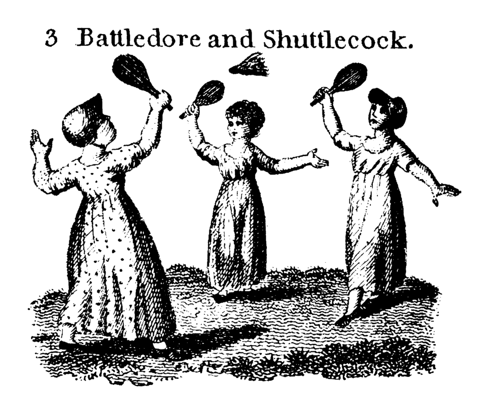

Badminton is a racquet sport played using racquets to hit a shuttlecock across a net. Although it may be played with larger teams, the most common forms of the game are "singles" (with one player per side) and "doubles" (with two players per side). Badminton is often played as a casual outdoor activity in a yard or on a beach; professional games are played on a rectangular indoor court. Points are scored by striking the shuttlecock with the racquet and landing it within the other team's half of the court, within the set boundaries. Each side may only strike the shuttlecock once before it passes over the net. Play ends once the shuttlecock has struck the floor or ground, or if a fault has been called by the umpire, service judge, or (in their absence) the opposing side.[1] The shuttlecock is a feathered or (in informal matches) plastic projectile that flies differently from the balls used in many other sports. In particular, the feathers create much higher drag, causing the shuttlecock to decelerate more rapidly. Shuttlecocks also have a high top speed compared to the balls in other racquet sports, making badminton the fastest racquet sport in the world. The flight of the shuttlecock gives the sport its distinctive nature, and in certain languages the sport is named by reference to this feature (e.g., German Federball, literally feather-ball). The game developed in British India from the earlier game of battledore and shuttlecock. European play came to be dominated by Denmark but the game has become very popular in Asia. In 1992, badminton debuted as a Summer Olympic sport with four events: men's singles, women's singles, men's doubles, and women's doubles;[2] mixed doubles was added four years later. At high levels of play, the sport demands excellent fitness: players require aerobic stamina, agility, strength, speed, and precision. It is also a technical sport, requiring good motor coordination and the development of sophisticated racquet movements involving much greater flexibility in the wrist than some other racquet sports.[3]
The court is rectangular and divided into halves by a net. Courts are usually marked for both singles and doubles play, although badminton rules permit a court to be marked for singles only.[14] The doubles court is wider than the singles court, but both are of the same length. The exception, which often causes confusion to newer players, is that the doubles court has a shorter serve-length dimension. The full width of the court is 6.1 metres (20 feet), and in singles this width is reduced to 5.18 metres (17.0 feet). The full length of the court is 13.4 metres (44 feet). The service courts are marked by a centre line dividing the width of the court, by a short service line at a distance of 1.98 metres (6 feet 6 inches) from the net, and by the outer side and back boundaries. In doubles, the service court is also marked by a long service line, which is 0.76 metres (2 feet 6 inches) from the back boundary. The net is 1.55 metres (5 feet 1 inch) high at the edges and 1.524 metres (5.00 feet) high in the centre. The net posts are placed over the doubles sidelines, even when singles is played. The minimum height for the ceiling above the court is not mentioned in the Laws of Badminton. Nonetheless, a badminton court will not be suitable if the ceiling is likely to be hit on a high serve.